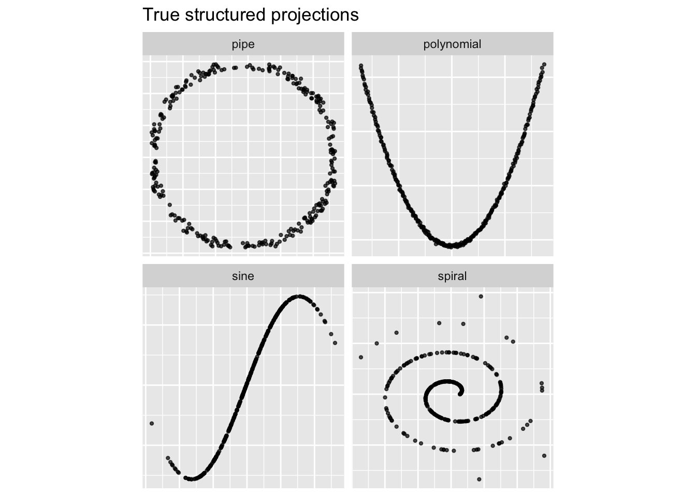
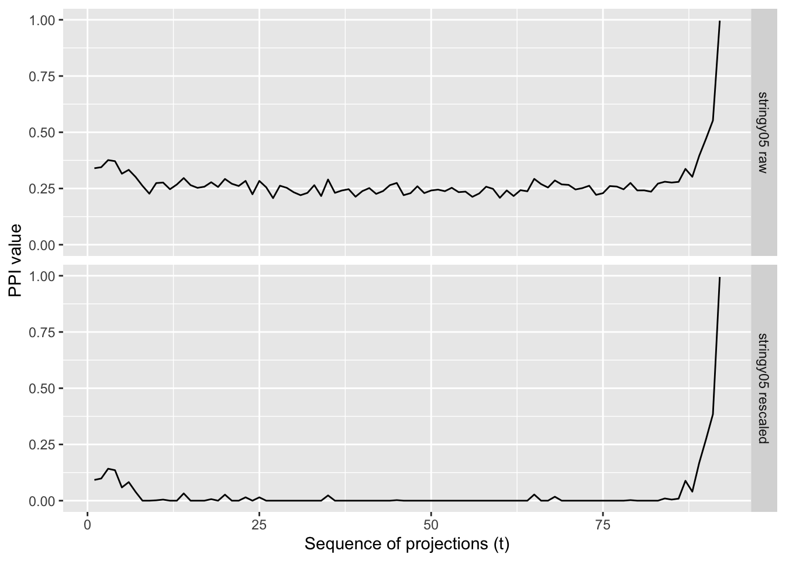
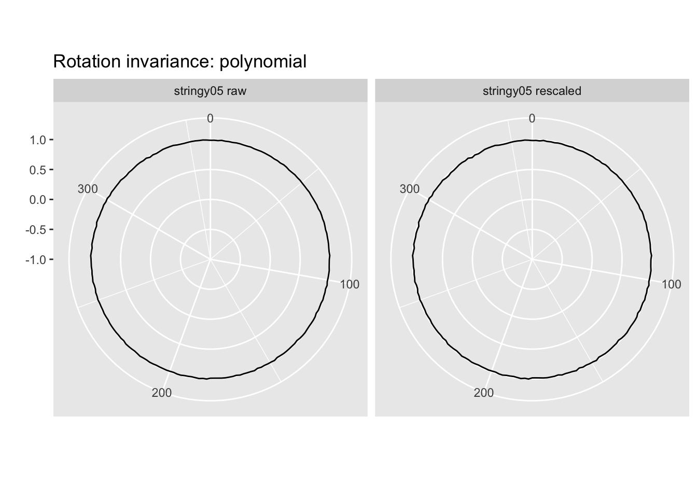
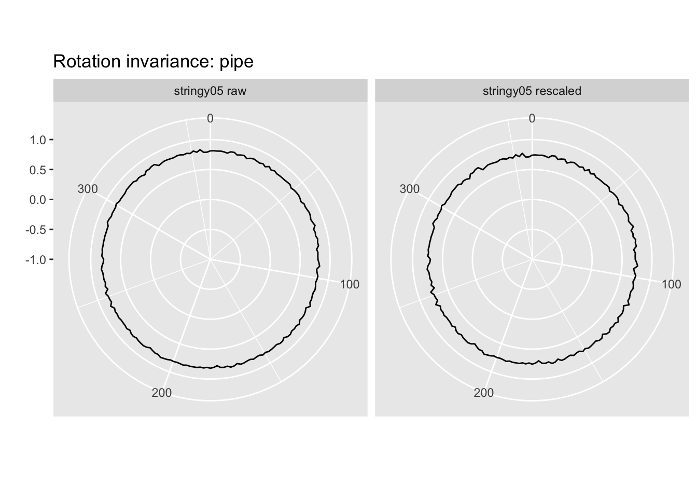
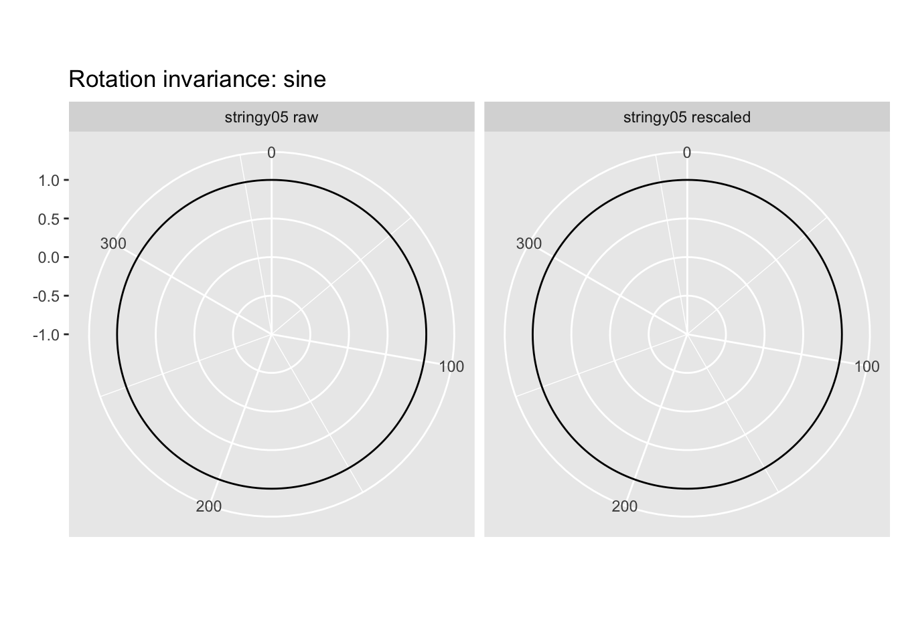
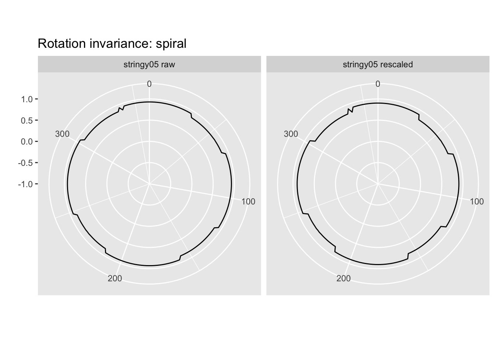
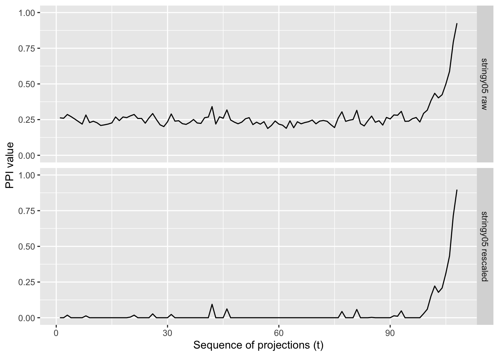
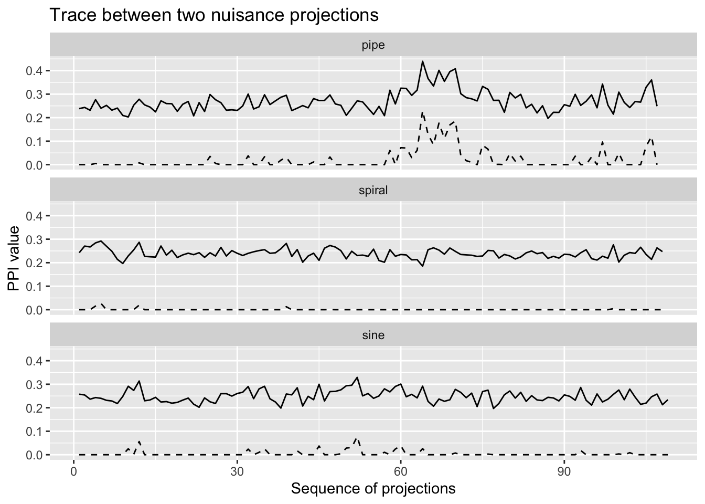

Code
# Load packages
library(tourr)
library(cassowaryr)
library(spinebil)
library(ferrn)
library(dplyr)
library(tidyr)
library(purrr)
library(ggplot2)stringy05 is suitable as a projection pursuit index23 Jun 2026
Before using stringy05 inside a guided tour, I first check whether it behaves like a useful projection pursuit index.
For data matrix \(X \in \mathbb{R}^{n \times p}\) and projection basis \(A \in \mathbb{R}^{p \times 2}\), the projected data are
\[ Y = XA. \]
The projection pursuit index is then calculated on \(Y\).
Here I compare two versions of the index:
stringy05(rescale = FALSE): the original stringy05 index.stringy05(rescale = TRUE): a rescaled version designed to reduce the influence of values that commonly arise from Gaussian noise.In previous work, I estimated the distribution of the stringy05 index under bivariate Gaussian noise across different sample sizes. Using the estimated upper tail of this noise distribution, I derived a sample-size-dependent threshold
\[ \ell(n) = 0.05 + \frac{3.86}{\sqrt{n}}. \]
The rescaled index is then defined as
\[ I_{\text{rescaled}} = \max \left( 0, \frac{I - \ell(n)} {1 - \ell(n)} \right), \]
where \(I\) is the original stringy05 value.
This transformation preserves the upper end of the index while shrinking values that are likely to arise from Gaussian noise. Values below the estimated noise threshold are mapped to zero, and values above the threshold are linearly rescaled to the interval \([0,1]\).
The motivation is that random noise projections can sometimes produce non-zero stringy values, potentially making optimisation more difficult. By incorporating an estimated noise threshold, the rescaled version aims to increase separation between structured projections and noise projections, allowing the optimiser to focus more strongly on projections containing genuine stringy structure.
# Rescaling function for stringy05
rescale_stringy05 <- function(z, n) {
lb <- 0.05 + 3.86 / sqrt(n)
pmax(0, (z - lb) / (1 - lb))
}
stringy05_raw <- function(mat) {
cassowaryr::sc_stringy05(mat[, 1], mat[, 2])
}
stringy05_rescaled <- function(mat) {
z <- cassowaryr::sc_stringy05(mat[, 1], mat[, 2])
rescale_stringy05(z, nrow(mat))
}I use four datasets:
make_poly_data <- function(n = 300, p = 4, degree = 2, seed = 1050,
signal_noise_sd = 0.005) {
set.seed(seed)
t <- seq(-1, 1, length.out = n)
signal <- poly(t, degree = degree, raw = TRUE)
x <- matrix(rnorm(n * p), nrow = n, ncol = p)
x[, 2] <- signal[, 1] + rnorm(n, sd = signal_noise_sd)
x[, 3] <- signal[, 2] + rnorm(n, sd = signal_noise_sd)
colnames(x) <- paste0("V", seq_len(p))
as.data.frame(x)
}
dat4 <- scale(make_poly_data(n = 300, p = 4, degree = 2, seed = 1050))The polynomial signal is in variables 2 and 3.
For these spinebil datasets, I use six variables. The structured variables are V5 and V6, and the nuisance variables are V1, V2, V3, and V4.
set.seed(1050)
pipe_dat <- spinebil::pipe_data(300, 6) |> scale()
sine_dat <- spinebil::sin_data(300, 6, 1) |> scale()
spiral_dat <- spinebil::spiral_data(300, 6) |> scale()
basis_spinebil_true <- spinebil::basis_matrix(5, 6, 6)
basis_spinebil_noise1 <- spinebil::basis_matrix(1, 2, 6)
basis_spinebil_noise2 <- spinebil::basis_matrix(3, 4, 6)Before using the guided tour, I first plotted the signal variables directly. This is the target structures that I want the guided tour to find.
poly_plot <- as.data.frame(dat4) |>
transmute(x = V2, y = V3, data = "polynomial")
pipe_plot <- as.data.frame(pipe_dat) |>
transmute(x = V5, y = V6, data = "pipe")
sine_plot <- as.data.frame(sine_dat) |>
transmute(x = V5, y = V6, data = "sine")
spiral_plot <- as.data.frame(spiral_dat) |>
transmute(x = V5, y = V6, data = "spiral")
bind_rows(poly_plot, pipe_plot, sine_plot, spiral_plot) |>
ggplot(aes(x = x, y = y)) +
geom_point(size = 0.8, alpha = 0.7) +
facet_wrap(~ data, scales = "free") +
theme(
aspect.ratio = 1,
axis.text = element_blank(),
axis.ticks = element_blank()
) +
labs(
x = NULL,
y = NULL,
title = "True structured projections"
)
# Rescaling function for stringy05
rescale_stringy05 <- function(z, n) {
lb <- 0.05 + 3.86 / sqrt(n)
pmax(0, (z - lb) / (1 - lb))
}
stringy05_raw <- function(mat) {
cassowaryr::sc_stringy05(mat[, 1], mat[, 2])
}
stringy05_rescaled <- function(mat) {
z <- cassowaryr::sc_stringy05(mat[, 1], mat[, 2])
rescale_stringy05(z, nrow(mat))
}
direct_check <- tibble(
data = c("polynomial", "pipe", "sine", "spiral"),
raw_signal = c(
stringy05_raw(dat4 %*% basis_poly_true),
stringy05_raw(pipe_dat %*% basis_spinebil_true),
stringy05_raw(sine_dat %*% basis_spinebil_true),
stringy05_raw(spiral_dat %*% basis_spinebil_true)
),
raw_noise = c(
stringy05_raw(dat4 %*% basis_poly_noise),
stringy05_raw(pipe_dat %*% basis_spinebil_noise1),
stringy05_raw(sine_dat %*% basis_spinebil_noise1),
stringy05_raw(spiral_dat %*% basis_spinebil_noise1)
),
rescaled_signal = c(
stringy05_rescaled(dat4 %*% basis_poly_true),
stringy05_rescaled(pipe_dat %*% basis_spinebil_true),
stringy05_rescaled(sine_dat %*% basis_spinebil_true),
stringy05_rescaled(spiral_dat %*% basis_spinebil_true)
),
rescaled_noise = c(
stringy05_rescaled(dat4 %*% basis_poly_noise),
stringy05_rescaled(pipe_dat %*% basis_spinebil_noise1),
stringy05_rescaled(sine_dat %*% basis_spinebil_noise1),
stringy05_rescaled(spiral_dat %*% basis_spinebil_noise1)
)
)
knitr::kable(direct_check, digits = 3)| data | raw_signal | raw_noise | rescaled_signal | rescaled_noise |
|---|---|---|---|---|
| polynomial | 0.988 | 0.242 | 0.984 | 0.000 |
| pipe | 0.811 | 0.400 | 0.741 | 0.174 |
| sine | 1.000 | 0.235 | 1.000 | 0.000 |
| spiral | 0.929 | 0.238 | 0.902 | 0.000 |
plot_proj <- function(dat, basis, data, projection) {
as.data.frame(as.matrix(dat) %*% basis) |>
setNames(c("x", "y")) |>
mutate(data = data, projection = projection)
}
projection_plot_data <- bind_rows(
plot_proj(dat4, basis_poly_true, "polynomial", "signal"),
plot_proj(dat4, basis_poly_noise, "polynomial", "noise"),
plot_proj(pipe_dat, basis_spinebil_true, "pipe", "signal"),
plot_proj(pipe_dat, basis_spinebil_noise1, "pipe", "noise"),
plot_proj(sine_dat, basis_spinebil_true, "sine", "signal"),
plot_proj(sine_dat, basis_spinebil_noise1, "sine", "noise"),
plot_proj(spiral_dat, basis_spinebil_true, "spiral", "signal"),
plot_proj(spiral_dat, basis_spinebil_noise1, "spiral", "noise")
)
ggplot(projection_plot_data, aes(x = x, y = y)) +
geom_point(size = 0.8, alpha = 0.7) +
facet_grid(projection ~ data, scales = "free") +
theme(
aspect.ratio = 1,
axis.text = element_blank(),
axis.ticks = element_blank()
) +
labs(
x = NULL,
y = NULL,
title = "Signal and noise projections"
)
A useful projection pursuit index should give larger values to the signal projection than to the noise projection. The rescaled version should reduce the values assigned to noise projections.
For a 2D guided tour, the index should measure the plane, not the orientation inside the plane. This means rotating the projected 2D data should not substantially change the index value.
index_list <- list(
stringy05_raw,
stringy05_rescaled
)
index_labels <- c(
"stringy05 raw",
"stringy05 rescaled"
)
rotation_poly <- spinebil::profile_rotation(
d = dat4 %*% basis_poly_true,
index_list = index_list,
index_labels = index_labels,
n = 200
)
spinebil::plot_rotation(rotation_poly) +
ggtitle("Rotation invariance: polynomial")
For the other datasets:
rotation_pipe <- spinebil::profile_rotation(
d = pipe_dat %*% basis_spinebil_true,
index_list = index_list,
index_labels = index_labels,
n = 200
)
rotation_sine <- spinebil::profile_rotation(
d = sine_dat %*% basis_spinebil_true,
index_list = index_list,
index_labels = index_labels,
n = 200
)
rotation_spiral <- spinebil::profile_rotation(
d = spiral_dat %*% basis_spinebil_true,
index_list = index_list,
index_labels = index_labels,
n = 200
)
spinebil::plot_rotation(rotation_pipe) +
ggtitle("Rotation invariance: pipe")


The rotation profile is almost flat for both the raw and rescaled versions of stringy05 . This suggests that the index is approximately rotation invariant: rotating the same 2D projection does not substantially change the index value. This is a good property for a projection pursuit index because the guided tour should evaluate the projection plane itself, not the arbitrary orientation of the points inside the 2D display.
Next, I examine how the index changes along an interpolated planned tour path from a noise projection to the signal projection. This checks whether the index increases as the projection moves from a noise plane toward the true structured plane.

Both the raw and rescaled versions remain relatively flat until very close to the true projection, where the index increases sharply, suggesting that stringy05 has relatively low squintability and may be challenging for optimizers to locate from random starting projections.
Here both endpoints are nuisance projections, so the index should ideally stay low.
trace_pipe_noise <- spinebil::get_trace(
d = pipe_dat,
m = list(basis_spinebil_noise1, basis_spinebil_noise2),
index_list = index_list,
index_labels = index_labels
)
trace_sine_noise <- spinebil::get_trace(
d = sine_dat,
m = list(basis_spinebil_noise1, basis_spinebil_noise2),
index_list = index_list,
index_labels = index_labels
)
trace_spiral_noise <- spinebil::get_trace(
d = spiral_dat,
m = list(basis_spinebil_noise1, basis_spinebil_noise2),
index_list = index_list,
index_labels = index_labels
)
trace_all_noise <- bind_rows(
as_tibble(trace_pipe_noise) |> mutate(data = "pipe"),
as_tibble(trace_spiral_noise) |> mutate(data = "spiral"),
as_tibble(trace_sine_noise) |> mutate(data = "sine")
)
trace_all_noise_long <- trace_all_noise |>
pivot_longer(
cols = c(`stringy05 raw`, `stringy05 rescaled`),
names_to = "index_type",
values_to = "value"
) |>
mutate(
data = factor(data, levels = c("pipe", "spiral", "sine"))
)
ggplot(trace_all_noise_long,
aes(x = t, y = value, linetype = index_type)) +
geom_line() +
facet_wrap(~ data, ncol = 1) +
scale_linetype_manual(
values = c(
"stringy05 raw" = "solid",
"stringy05 rescaled" = "dashed"
)
) +
theme(
legend.position = "none"
) +
labs(
x = "Sequence of projections",
y = "PPI value",
linetype = NULL,
title = "Trace between two nuisance projections"
)
The raw version gives non-zero or noisy values along nuisance paths, but the rescaled version is close to zero, this supports using the rescaled version inside the guided tour.
Squintability tells us how early the index starts detecting the structure. A small squint angle means the index only becomes large when the projection is already very close to the target plane.
set.seed(1050)
cutoff_raw <- unname(spinebil::ppi_noise_threshold(
index_fun = stringy05_raw,
n_sim = 100,
n_obs = 300,
noise_type = "gaussian",
seed = 1050
))
cutoff_rescaled <- unname(spinebil::ppi_noise_threshold(
index_fun = stringy05_rescaled,
n_sim = 100,
n_obs = 300,
noise_type = "gaussian",
seed = 1050
))
# Avoid zero cutoff for the rescaled index
cutoff_rescaled <- max(cutoff_rescaled, 0.01)
get_squint <- function(dat, basis_true, index_fun, cutoff) {
angles <- spinebil::squint_angle_estimate(
data = dat,
indexF = index_fun,
cutoff = cutoff,
structure_plane = basis_true,
n = 30,
step_size = 0.02
)
mean(angles, na.rm = TRUE)
}
squint_table <- tibble(
data = c("polynomial", "pipe", "sine", "spiral"),
raw = c(
get_squint(dat4, basis_poly_true, stringy05_raw, cutoff_raw),
get_squint(pipe_dat, basis_spinebil_true, stringy05_raw, cutoff_raw),
get_squint(sine_dat, basis_spinebil_true, stringy05_raw, cutoff_raw),
get_squint(spiral_dat, basis_spinebil_true, stringy05_raw, cutoff_raw)
),
rescaled = c(
get_squint(dat4, basis_poly_true, stringy05_rescaled, cutoff_rescaled),
get_squint(pipe_dat, basis_spinebil_true, stringy05_rescaled, cutoff_rescaled),
get_squint(sine_dat, basis_spinebil_true, stringy05_rescaled, cutoff_rescaled),
get_squint(spiral_dat, basis_spinebil_true, stringy05_rescaled, cutoff_rescaled)
)
)
knitr::kable(
squint_table,
digits = 3,
caption = "Mean squint angle for raw and rescaled stringy05 across datasets."
)| data | raw | rescaled |
|---|---|---|
| polynomial | 1.394 | 1.437 |
| pipe | 1.654 | 1.608 |
| sine | 1.588 | 1.607 |
| spiral | 1.557 | 1.619 |
The estimated squint angle for the polynomial dataset is 1.39 radians. Since this value is close to \(\pi/2\), it suggests that the index can detect the structure relatively early along the path toward the optimal projection. Therefore, for this dataset and cutoff, stringy05 appears to have good squintability. The rescaled version also shows slightly higher squintability than the raw index.